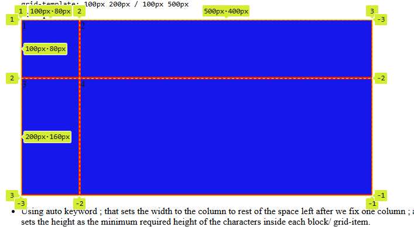

Some terms we use in the grid very commonly
When we talk anout grid we discuss about the following components in it :
- Grid Container: The container (a div) that contains all the other elements/items of a grid. The parent
- Grid Items: The items we place inside the grid contianer are called the grid items.
- Tracks: Row and Column Tracks that are the rectangles along the horizontal and vertical respectively. We usually create and size these tracks using the "grid-template-rows" and "grid-template-columns"
- Grid cell: Formed by the intersection of the grid rows and columns, the grid cells are the smallest unit of the grid. It can be of different size. We can use multiple Cells to create a grid item.
- Grid Lines: The horizontal and vertical lines that seperate the grid tracks and the grid cells. These can be controlled using the property gap, column-gap, row-gap, that specifies it's height or width.
Example:

Example 2: Positioning in Grid:
We adjust the grid-column and grid-row property to adjust the span of the grid items, directly onto the grid items itslef. The value of the grid-column and grid row are specified in terms of span, that are the difference/ space between the grid-lines.
The grid-column itself is the combination of two of the properties that are:
grid-column-start: and grid-column-end:
The span 2 value for the grid-column tells the css to start from where the item is supposed to start and span 2 column from there.